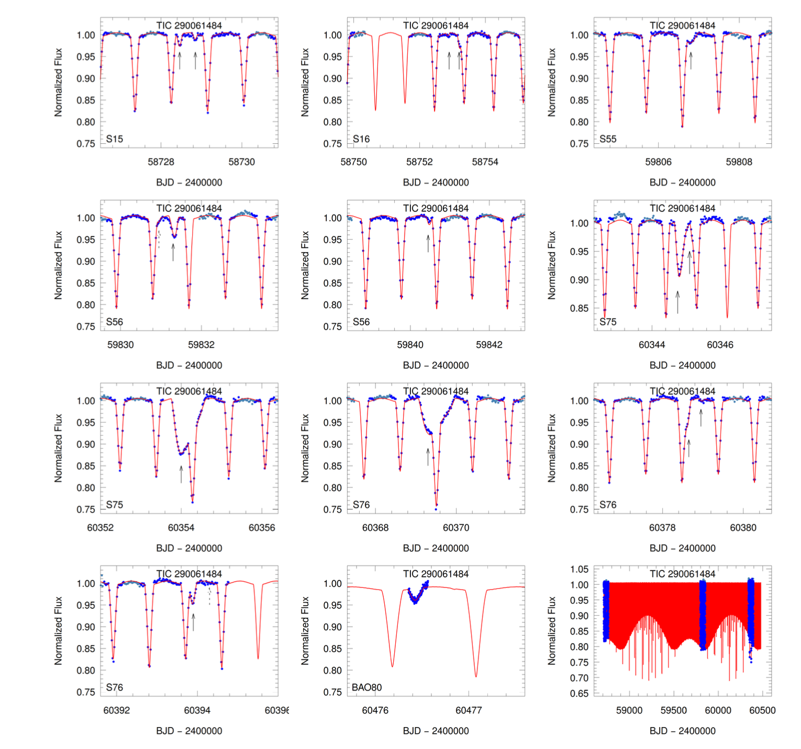
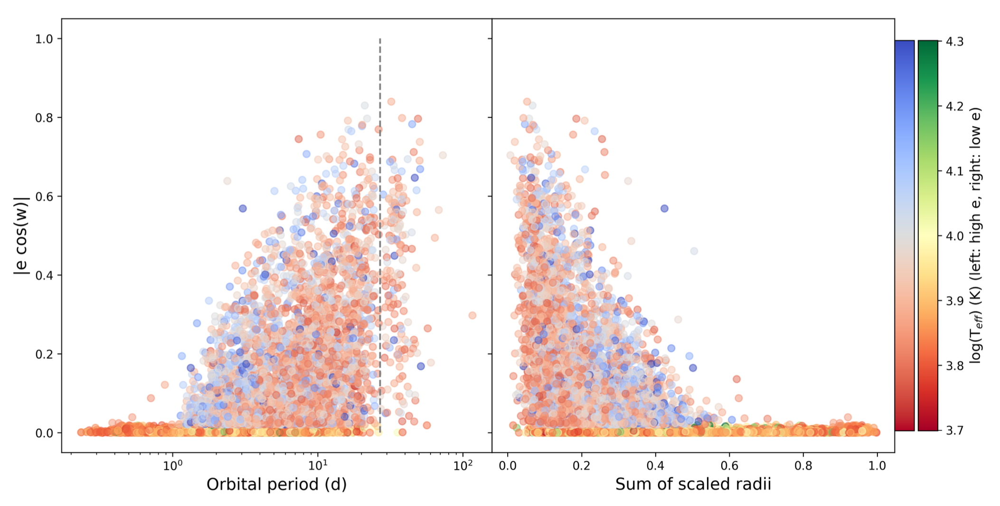
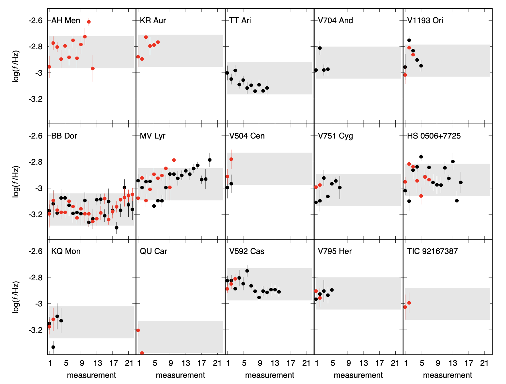

Welcome TESS followers to our latest news bulletin!
This week, we are looking at three recent papers from the archive. Enjoy!
TIC 290061484: A Triply Eclipsing Triple System with the Shortest Known Outer Period of 24.5 Days (Kostov et al. 2024) :
Triple-star systems are important tracers of the processes and mechanisms that drive stellar formation and evolution, and come in a variety of physical parameters and orbital configurations. The outer orbital periods of triple systems can be quite long – e.g. ~550,000 years for the case of our closest neighbor alpha Centauri – or remarkably short. For example, with an outer period of ~33 days, lambda Tauri held the record for the shortest-period triple system for 68 years. Kostov et al. (2024) report the discovery of a new shortest-period record holder, TIC 290061484, consisting of an inner eclipsing binary with a period of 1.8 days and an outer third star orbiting the center of mass every 24.5 days. TESS observed the system in Sectors 15, 16, 55, 56, 75, and 76 at the corresponding Full-Frame Image cadence, and detected a series of tertiary events where the third star eclipses or is eclipsed by the inner binary. The latter produces strong eclipse timing variations on the timescales of the outer orbit. Due to the strong dynamical interactions between the two sub-systems, the depths of the tertiary eclipses vary dramatically from one outer conjunction to the next. Photodynamical modeling of the system shows that the three stars have masses of 6.9 MSun, 6.1 MSun, and 7.9 MSun, with the tertiary being the most massive, corresponding effective temperatures between ~21,000 and 24,000 K, the mutual orbital inclinations are small and evolving rapidly. Additionally, the model shows that TIC 290061484 is in fact a 2+1+1 hierarchical quadruple system, with a fourth star on a much longer orbit of about 3,200 days. The compact inner triple is expected to merge in ~20 Myr and produce a Type II Supernova explosion. Thanks to TESS, Kostov et al. (2024) were able to discover the most compact triple star system to date, breaking a record that stood uncontested for 68 years.
Statistical view of orbital circularisation with 14 000 characterised TESS eclipsing binaries (IJspeert et al. 2024) :
Eclipsing binary systems play a vital role in shaping our knowledge of stellar astrophysics and serve as key ingredients in our understanding of how stars form and evolve. Multiple efforts based on ground- and space-based surveys have dramatically expanded the number of known systems since the beginning of the century, with tens to hundreds of thousands of eclipsing binaries observed from e.g. All-Sky Automated Survey (ASAS), All-Sky Automated Survey for Supernovae (ASAS-SN), Optical Gravitational Lensing Experiment (OGLE), Convection, Rotation and planetary Transits (CoRoT), Gaia, Kepler, and TESS. IJspeert et al. (2024) present a detailed statistical analysis of 69,058 eclipsing binary stars with stellar types ranging from O to F. The targets were observed by TESS at Full-Frame Image cadence in Sectors 1 through 55, at an average of about 3 sectors per target, and the eclipses were detected, analyzed, and classified with an established automated procedure. The authors obtained orbital parameters for about 37,000 targets, which were further subjected to manual vetting that resulted in a final well-characterized sample of about 14,500 eclipsing binaries. Combining the TESS photometry with Gaia data, IJspeert et al. (2024) investigated the statistical properties of that sample in terms of orbital period, scaled separation, and effective temperature, identified systems exhibiting stellar pulsations, and studied orbital circularization. The authors found that the latter is influenced by effective temperature, as noted in other studies, corroborated the previously recognized requirement for more dissipation than theoretical models predict, and argue that orbital circularization in closely-spaced binary stars could potentially be affected by the pulsations of the component stars. Capitalizing on TESS data, IJspeert et al. (2024) explored the relationship between orbital circularization of close binary stars and their physical and orbital properties, advancing our understanding of the physics governing these systems.
Searching for the mHz variability in the TESS observations of nova-like cataclysmic variables (Dobrotka et al. 2024) :
Cataclysmic variables (CVs) are close binary systems characterized by prominent accretion, where matter from a main sequence star is transferred to its companion white dwarf as the former fills its Roche lobe. Depending on the strength of the magnetic field, the transferred material may form an accretion disc around the white dwarf. Depending on the mass accretion rate, CVs can be more (high accretion rate, high optical brightness state) or less luminous (low accretion rate, low optical brightness state). Dobrotka et al. (2024) perform a detailed investigation of the fast optical variability of 15 nova-like and old nova CVs. The systems were monitored by TESS at short cadence and were selected to be primarily in high optical brightness state during the observations. The authors evaluated uninterrupted 5- and 10-days long sections of the TESS lightcurves for the dominant break frequencies (f_b) in the respective power density spectra as obtained from Lomb-Scargle periodogram analysis. Dividing each lightcurve section into 10 equal-length segments, and constraining the searched frequency range between log(f/Hz) = -3.5 and log(f/Hz) = -2.4, Dobrotka et al. (2024) identified 15 positive detections clustered near a preferred value of 1 mHz, and a distribution maximum in the range log(f/Hz) = -2.95 and log(f/Hz) = -2.84. The authors also argue that the f_b measurements can potentially be correlated with the white dwarfs masses, although they advise caution when interpreting these results due to the small number statistics. Thanks to TESS, Dobrotka et al. (2024) were able to obtain improved measurements on the dominant break frequency in the power spectrum density of optical variability in nova-like and old nova cataclysmic variables, constraining it to log(f/Hz) = -2.95 and log(f/Hz) = -2.84, with a 96% probability that it is a genuine astrophysical signal and not a random feature of a uniform distribution.

Fig. 1: Taken from Kostov et al. (2024). TESS data (blue) and corresponding photodynamical model (red) for TIC 290061484, the most compact triple system known to date with an outer orbital period of 24.5 days. The last panel (lower right) shows the long-term evolution of eclipses, highlighting the dramatic depth changes caused by the strong dynamical interactions between the inner binary and the outer third star.

Fig. 2: Taken from IJspeert et al. (2024). Tangential component of the orbital eccentricity of eclipsing binary stars observed by TESS as a function of the orbital period (left panel), sum of the scaled radii (right panel), and effective temperature (color-coded gradient).

Fig. 3: Taken from Dobrotka et al. (2024). Measured dominant break frequency in the power spectrum density of optical variability in 15 nova-like and old nova cataclysmic variables observed by TESS. Red/black symbols represent measurements based on 10/5-day sections of the corresponding lightcurves.